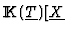

GPT Strategy.
The strategy, here denoted GPT, was introduced in [6] in order
to avoid the growth of the coefficients when using Buchberger algorithm to
compute a Gröbner Basis of a multivariate polynomial ideal. The main
idea is to keep track, into the different steps of Buchberger algorithm,
of a list of potential factors (presented in factored form) such that in
many cases simplification is posible by dividing by the ``greatest between
the common divisors that are easy to compute" and in this way to avoid
gcd computations.
In our case, it seems that to apply this strategy is even more natural
than to apply it to avoid the growing of the integers as it was the
initial motivation in [6]. In fact the list of potential factors,
in our case and working in

], is going to
give us a set of open conditions on the parameters such that if they are
verified it is clear that the specialization of the generic Gröbner
Basis is going to give us a Gröbner Basis of the specialized ideal.
The example in [6] is very clear about how to proceed: if the
initial system is
then the list of open conditions is given by
and when all these polynomials in the parameters are different from 0,
the specialization of the generic Gröbner Basis is a Gröbner Basis
of the specialized ideal.
In fact this is no more that a lazy application of the ``Dynamic Evaluation
Method" of D. Duval (see [4]) but following only one open
branch. The decision to make at this point is how much do we want to have
simplified the list of open conditions.
The case of only one parameter is especially suited to apply the
so called GPT strategy since all the computations with the parameters
reduce to compute gcd's of univariate polynomials which is not very
expensive.
IMACS ACA'98 Electronic Proceedings